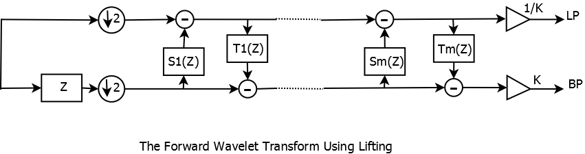
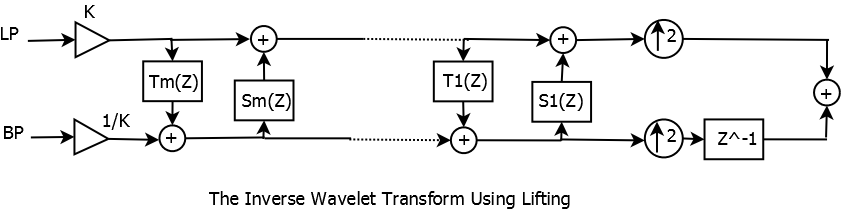

Lifting Scheme Class and Functions
This library implements lifting scheme based on Sweldens/Daubechies paper. I. Daubechies, W. Sweldens, Factoring wavelets transforms into lifting steps, J. Fourier Anal. Appl. 4 (3) (1998) 247-269. It is highly recommended that you download a copy of the paper from either the website of the Journal or from http://cm.bell-labs.com/who/wim/papers/factor/index.html (See Figure 7 and 8 for implementation details)
 liftscheme Class
name is the wavelet name and as of now the supported wavelets are Lazy, Haar(db1),db2-8, sym2-8, bior2.2-8, bior3.1-9, bior4.4 Usage Example is straightforward :
- string name="bior4.4";
- liftscheme blift(name);
Functions Associated With liftscheme Class
- int nlifts ()
- double K ()
- string getName ()
- void getScheme (vector< double > &coeff, vector< int > &lenvec, string &lattice, double &Kc)
- void disp ()
- void addLift (string &c, vector< double > &addcoeff, int mp)
- void addLift (string &c, vector< double > &addcoeff, int mp, string &pos)
Adding A Lifting Stage to liftscheme
Consider the liftscheme class defined as above. Suppose we want to add a dual lifiting stage to the scheme. We use addLift function as shown below. I have also overloaded the addlift function to specify whether the lifting stage should be added at the beginning or end. It accepts only two string values "begin" and "end". The default is "end".
-
// Adding a Dual Lifting Stage
- string c="d"; //d corrsponds to dual while p corresponds to primal
- vector<double> addl;
- addl.push_back(0.500);
- addl.push_back(-0.125);
- int mp=0;
- blift.addLift(c,addl,mp);
addl is a vector [0.500,-0.125] while mp is its maximum power such that the lift stage corresponds to the Laurent Polynomial 0.5*z^(0)-0.125*z^(-1).
A Simple Example demonstrating the usage of liftscheme class
#include <iostream>
#include <cmath>
#include <vector>
#include <string>
#include <algorithm>
#include "lwave.h"
using namespace std;
int main()
{
string name="bior4.4";
liftscheme blift(name);
// Adding a Dual Lifting Stage
string c="d"; //d corrsponds to dual while p corresponds to primal
vector<double> addl;
addl.push_back(0.500);
addl.push_back(-0.125);
int mp=0;
blift.addLift(c,addl,mp);
//Getting Information
cout << " Number Of Lifting Stages : " << blift.nlifts() << endl;
cout << " K Constant : " << blift.K() << endl;
cout << " Name : " << blift.getName() << endl;
vector<double> coeff;
vector<int> lenvec;
string lattice;
double Kc;
// Getting Full Scheme
blift.getScheme(coeff,lenvec,lattice,Kc);
cout << "Lifting Structure : " << lattice << endl;
cout << " K Constant (Same As Above) : " << Kc << endl;
cout << "A Single Vector Containing All Lifting Coefficients " << endl;
for (int i=0; i < (int)coeff.size(); i++) {
cout << coeff[i] << " " ;
}
cout << endl;
cout << "Length Vector that corresponds to lengths of Lifting Coefficients and Maximum Power at each Stage" << endl;
for (int i=0; i <(int) lenvec.size(); i++) {
cout << lenvec[i] << " " ;
}
cout << endl;
// disp() Function Displays Coefficients and Laurent Polynomials At Each Stage
blift.disp();
return 0;
}
The Corresponding Output is shown below. The program is very descriptive and users will have no problem understanding it. getScheme() can be used to obtain filter coefficients of each lifting stage. The first vector contains all the coefficients. The second vector (lenvec) may be used to extract individual coefficients at each stage. eg., lenvec[2*i] contains the length of the coefficient vector at stage i while lenvec[2*i+1] contains the maximum power. See the output below for more details.
Number Of Lifting Stages : 5
K Constant : -0.869864
Name : bior4.4
Lifting Structure : dpdpd
K Constant (Same As Above) : -0.869864
A Single Vector Containing All Lifting Coefficients
1.58613 1.58613 -1.07964 0.0529801 0.882911 0.882911 -0.443507 -1.57612 0.5 -0.1
25
Length Vector that corresponds to lengths of Lifting Coefficients and Maximum Po
wer at each Stage
2 1 2 0 2 0 2 2 2 0
Total Number of Stages : 5
--------------------------
Stage : 1
Dual Lift
Coefficients : 1.58613 1.58613
Laurent Polynomial : 1.58613*z^(1)+1.58613*z^(0)
Stage : 2
Primal Lifting
Coefficients : -1.07964 0.0529801
Laurent Polynomial : -1.07964*z^(0)+0.0529801*z^(-1)
Stage : 3
Dual Lift
Coefficients : 0.882911 0.882911
Laurent Polynomial : 0.882911*z^(0)+0.882911*z^(-1)
Stage : 4
Primal Lifting
Coefficients : -0.443507 -1.57612
Laurent Polynomial : -0.443507*z^(2)-1.57612*z^(1)
Stage : 5
Dual Lift
Coefficients : 0.5 -0.125
Laurent Polynomial : 0.5*z^(0)-0.125*z^(-1)
--------------------------
K : -0.869864